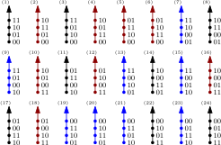
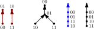
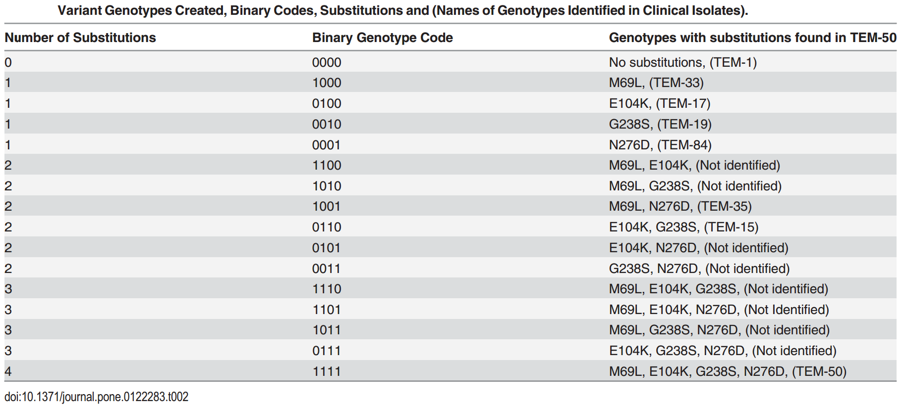
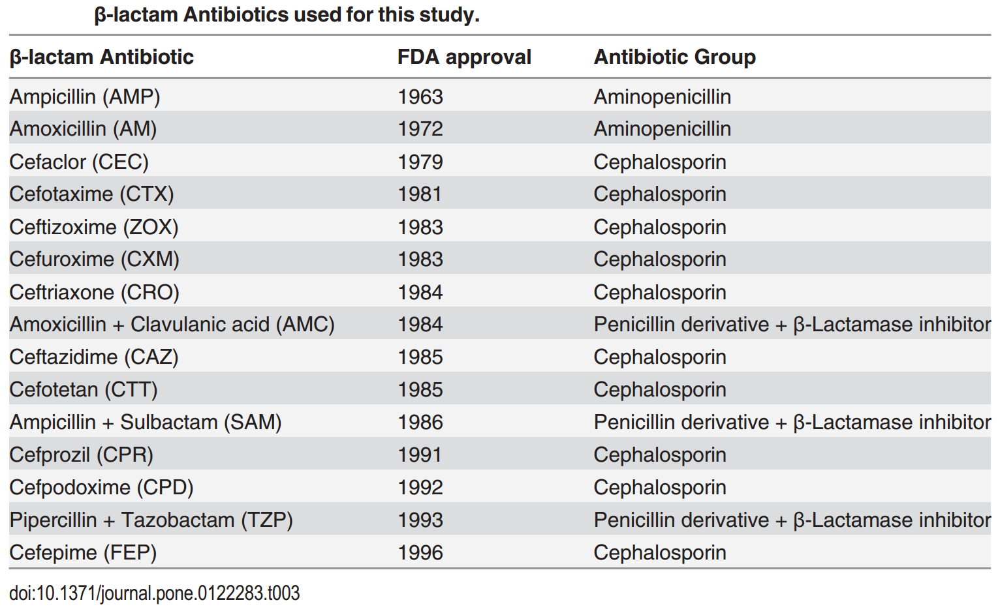
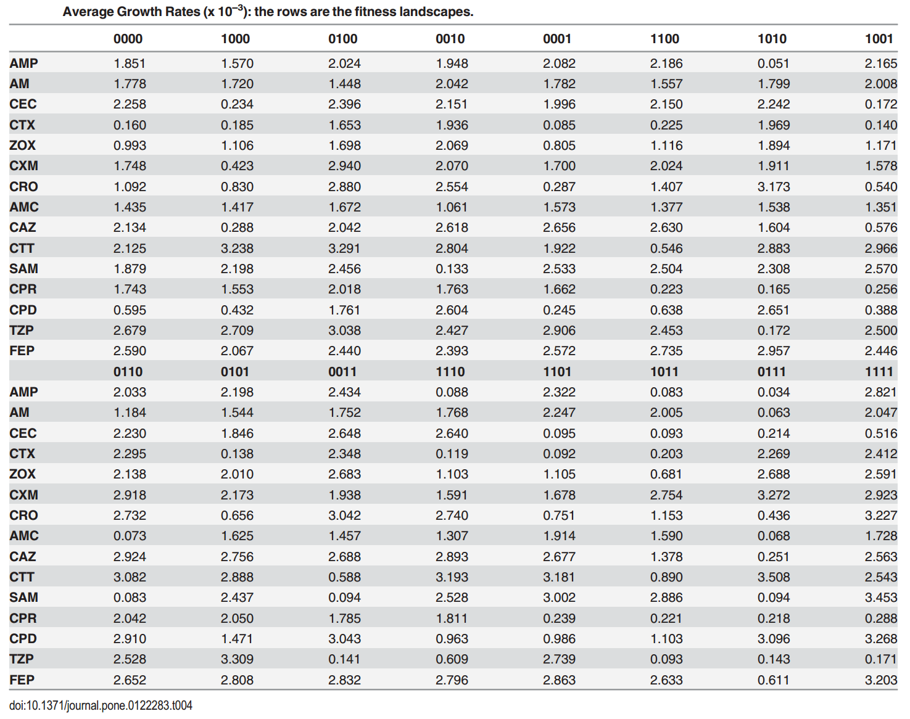

Fitness landscapes and incomplete data
Alex Gavryushkin
12 February 2018
Throughout, we consider $n$ biallelic loci, for different $n$.
That is, the set of genotypes is $\mathcal G = \{0,1\}^{n}$.
A fitness landscape is a function $w:\mathcal G \to \mathbb R^+$.
For $g \in \mathcal G$, $w(g)$ is called the fitness of genotype $g$ and denoted $w_g$.
Epistasis
is defined as the deviation from the additive expectation of allelic effects: $$u_{11} = w_{00} + w_{11} - (w_{01} + w_{10})$$Problem: What if no (credible) fitness measurements are available?
 Image: Wikipedia
Image: Wikipedia
Mutation fitness graph
Ogbunugafor et al. Malar. J. 2016
Rank orders. The simplest case.
$\small u_{11} = w_{00} + w_{11} - (w_{01} + w_{10})$ Characterization of epistatic rank orders
Theorem 1. Consider a biallelic $n$-locus system. The number of rank orders which imply $n$-way epistasis is: \[ \frac{(2^n)! \times 2}{2^{n-1}+1} \]
Corollary. The fraction of rank orders that imply $n$-way epistasis among all rank orders is: \[ \frac{2}{2^{n-1}+1} \]
Connection between rank orders and mutation graphs
Observation: A partial fitness order implies epistasis if and only if all its total extensions do.
Let $f$ be a linear form with integer coefficients. Assume that the sum of the coefficients of $f$ is zero. A partial fitness order of genotypes $\prec$ implies positive $f$-interaction if $f(w) > 0$ whenever $w$ satisfy $\prec$.
Theorem: A partial order $P = (G, \prec)$ implies positive $f$-interaction if and only if there exists a partition of the set of all genotypes $G$ into pairs $(p_i, n_j)$ such that $p_i \succ n_j$ for all $i, j$, where $p_i$ have positive coefficients in $f$ and $n_j$ negative.
Proof: Exercise.
Corollary: It is polynomial in the number of genotypes ($n^{5/2}$) to check whether a partial order implies $f$-interaction.
Applications
-
HIV-1
-
Antibiotic resistance
-
Gut microbiome
-
Synthetic lethality
-
Knockdown cell lines
Methodologically, this allows us to advise further measurements (experiments) for incomplete data sets, thus reducing the number of potential experiments significantly.
Example: antibiotic resistance
Example: antibiotic resistance
Example: antibiotic resistance
Example: antibiotic resistance
Results summary
Efficient methods for:- Circuit interaction inference (including epistasis and three-way interaction) for total orders
- Complete analysis of partial orders (including mutation graphs) with "distance to interaction" inference
- Suggestions for possible completions in case of missing data and/or high uncertainty
Software (pre-release stage):
https://github.com/gavruskin/fitlands
Understanding three-way interactions
Total three-way interaction?
$\small u_{111} = w_{000} + w_{011} + w_{101} + w_{110} - (w_{001} + w_{010} + w_{100} + w_{111})$
Marginal epistasis?
$\small u_{\color{blue}{0}11} = w_{\color{blue}{0}00} + w_{\color{blue}{1}00} + w_{\color{blue}{0}11} + w_{\color{blue}{1}11} − (w_{\color{blue}{0}01} + w_{\color{blue}{1}01}) − (w_{\color{blue}{0}10} + w_{\color{blue}{1}10})$
Conditional epistasis?
$\small e = w_{\color{blue}{0}00} − w_{\color{blue}{0}01} − w_{\color{blue}{0}10} + w_{\color{blue}{0}11}$
Total mess!
Algebraic Geometry sorts out the mess!
$e = \frac12(u_{011} + u_{111})$In general, the four interaction coordinates $$u_{011}, u_{101}, u_{110}, u_{111}$$ allow to describe all possible kinds of interaction!
There are 20 types of three-way interaction and they are the circuits of the three-cube.
Yep, we've got the list!
Want to learn more?
- Come join us! We are hiring:
http://lab.gavruskin.com/opportunities
- All our talks (including this one) are at
http://lab.gavruskin.com/talks
- Preprints are at
http://lab.gavruskin.com/publications
- Software (and manuscripts in-progress) here:
https://github.com/gavruskin
Acknowledgements
- You
- Niko Beerenwinkel, ETH Zürich
- Bernd Sturmfels, Max Planck Institute Leipzig
- Kristina Crona, American University
- Devin Greene, American University
- Lisa Lamberti, ETH Zürich
- Caitlin Lienkaemper, Penn State